¿Dónde está daiquirí?
Nació hacia 1900 en la mina de Daiquirí, cerca de Santiago de Cuba. El ingeniero estadounidense Jennings Cox, al quedarse sin ginebra para sus invitados, improvisó con ron local, limón y azúcar. El nombre quedó como homenaje al lugar donde se inventó.
RECETA
- 60 ml ron blanco
- 25 ml jugo de lima
- 15 ml jarabe simple
- 1 rebanada de limón
- Para preparar el jarabe simple, mezcla partes iguales de azúcar y agua caliente hasta que el azúcar se disuelva. Deja enfriar antes de usar.
- Agrega todos los ingredientes a una coctelera con hielo.
- Agita bien hasta enfriar.
- Cuela y sirve
- Decorda con una rebanada de limón
Vaso: Copa cóctel (martini)